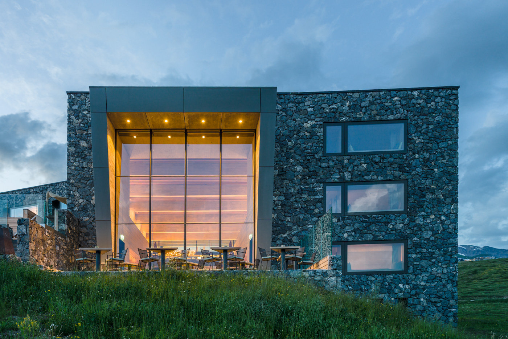
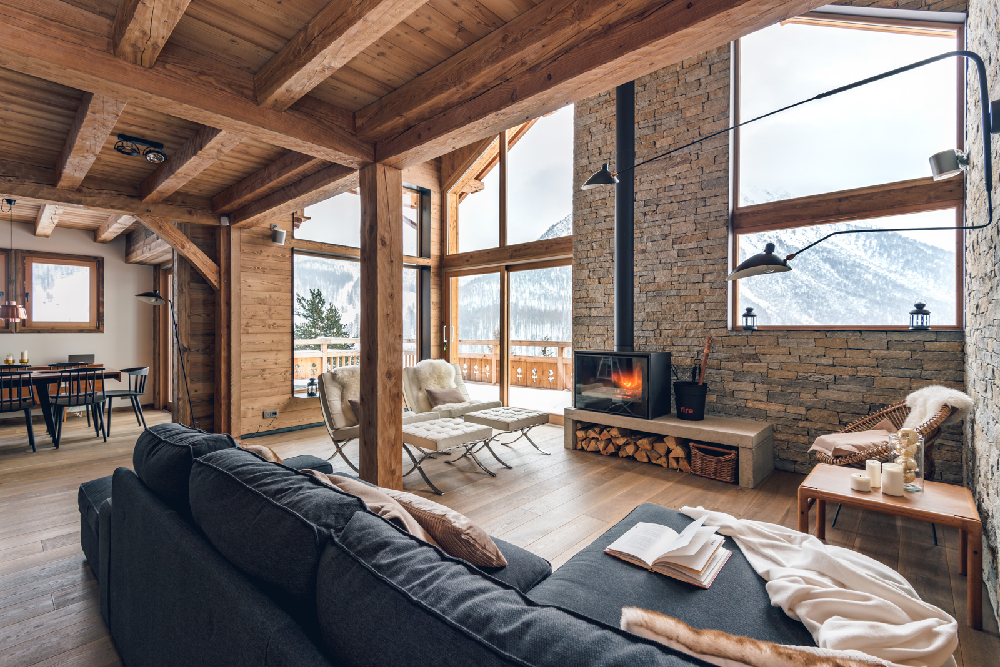
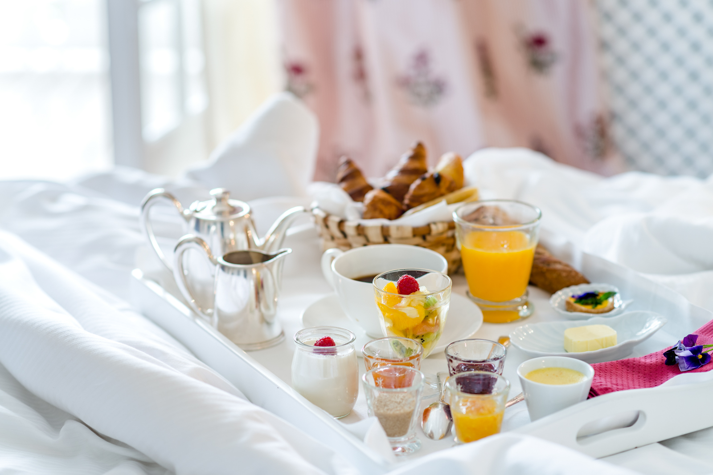
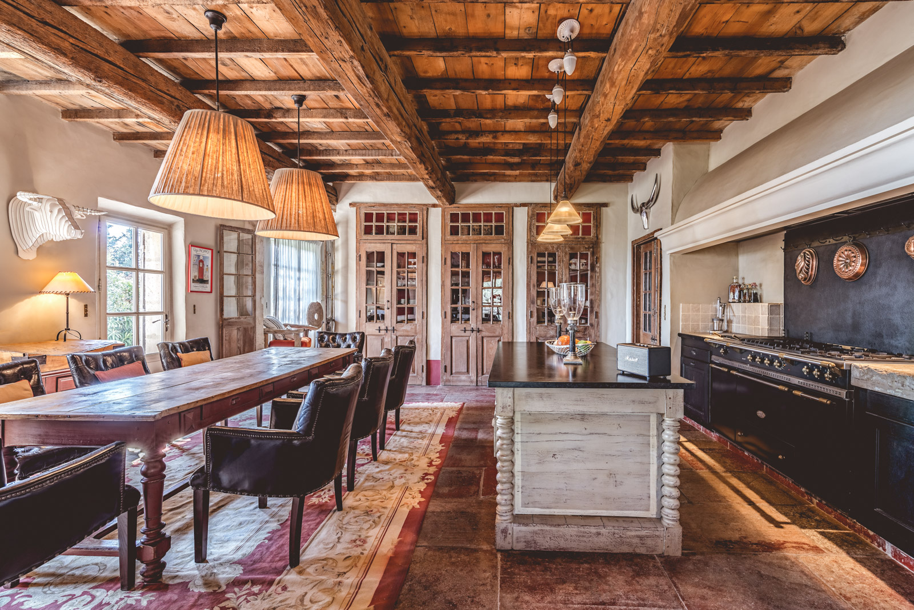
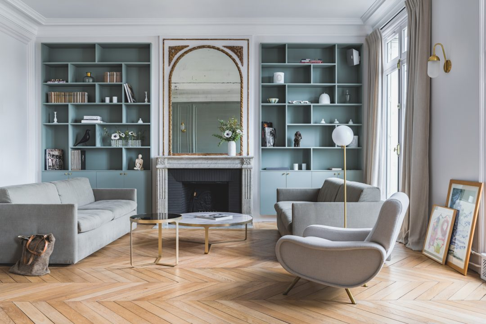
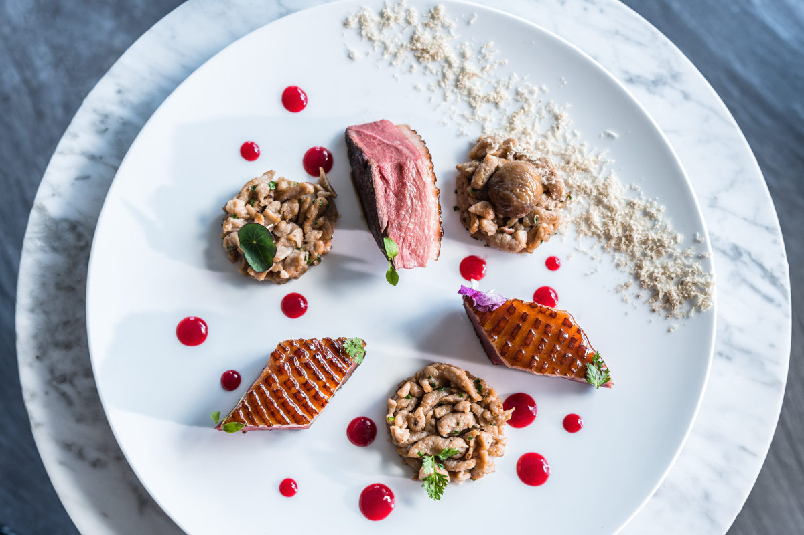
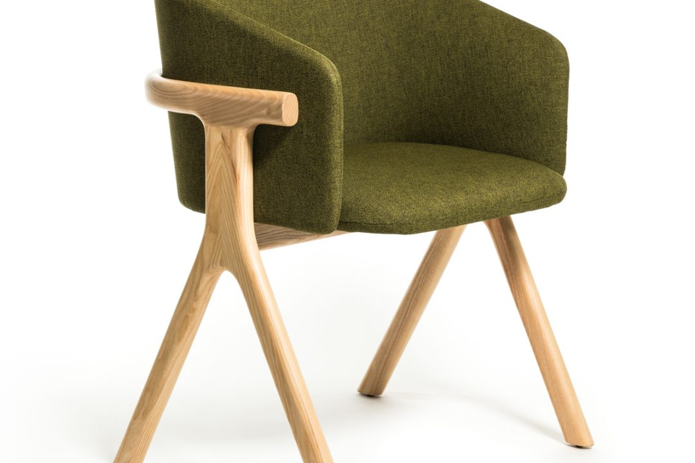

Photographie
indépendante de
qualité
Hôtellerie — Culinaire — Voyage — Maison d’hôtes
La gloire se mérite…
et se provoque un peu
StudioChevojon est là pour ceux
pour qui l’image est essentielle pour
vendre. Alors naturellement, il ne
s’agit pas uniquement de faire de
belles photos, il faut savoir inventer
celles qui sauront convaincre. Les
histoires fortes ne naissent pas dans
les choux mais dans la lumière…
- 
- 
- 
- 
Les derniers projets
Tous les projets
Décoration
Les décoratrices Fanny Prat & Alexandra de Brem
Décoration
Le Comptoir Nordique
Design
La chaise Eora
Anaël Joly
Photographe
Il y a des choses qui comptent vraiment pour moi, comme d’être en mouvement. C’est le mouvement qui crée des instants à photographier. Alors ne soyez pas surpris si l’on se croise à des centaines de kilomètres de Toulouse…
StudioChevojon, photographe hötels, culinaire, restaurants, luxe, maisons d’hôtes, voyages